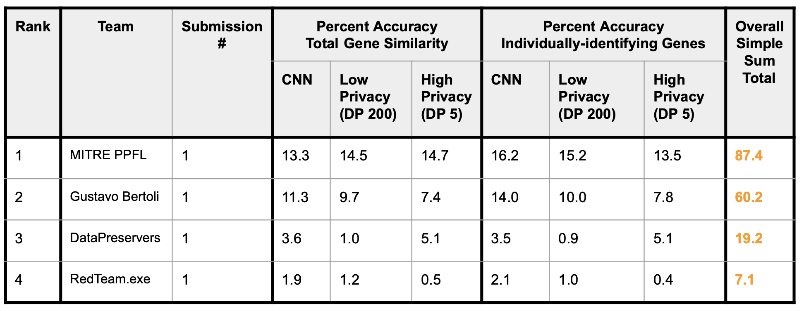

NIST launches new privacy red-teaming tasks.
Will you accept the challenge?
The NIST Privacy Engineering Program and the National Cybersecurity Center of Excellence are pleased to invite the public to participate in privacy red-teaming exercises. Privacy-enhancing technologies such as synthetic data and federated-learning promise to unlock sensitive data stores for research and machine learning while limiting exposure of private information. Come help us test the efficacy of PETs applied to two model problems.
 Join
office hours every Wednesday at 11am ET through June 30, 2025.
Join
office hours every Wednesday at 11am ET through June 30, 2025.
 Join the Genomics PPFL list-serv
(submit an empty email to subscribe).
Join the Genomics PPFL list-serv
(submit an empty email to subscribe).
Federated learning over silos of genomic data
Federated learning is machine learning conducted across many stores of data without aggregating the information centrally. The data stores, or clients as they are typically called, can be individual mobile phones, large data silos, internet-of-things devices, or practically any other type of computer. Privacy-preserving federated learning (PPFL) where additional measures are added to federated learning to limit what information can be shared or learned across clients, between clients and central communications servers, or the in the final models.
The NIST PPFL blog series is a great place to learn more about this exciting technology.
In this red teaming exercise we’re exploring how clients can use differential privacy (added noise) to ensure privacy for genomic data even when the central compute server is untrusted and potentially compromised. This is safer than clients submitting raw data or models, but we need to understand the interplay of differential privacy, heterogeneity, and genomic data.
Try to attack the models at different privacy conditions and together we’ll learn empirically about the protections they provide. Understanding how to achieve verifiably sufficient privacy strength is a key requirement for deploying PPFL collaborations.
 Register your team
to participate.
Register your team
to participate.
Problem 1 Leaderboard

Problem 2 Leaderboard
Project Information
Teams are welcome to register at any point during the exercise and submit an entry for any problem. Participating in Phase 1 isn't required for participating in Phase 2.Phase 1, March-April 2025: Soybean Data
Phase 2, May-June 2025: Cancer Data
- Check out the Problem Statements tab to see the current red team problems!
- View webinar introducing the opportunity (March 10, 2025)
- Follow the steps on the Submit tab to prepare your submission
- Look at the Resources tab for links to attack libraries you can try out, and other helpful references
- Once the exercise is under way, you'll be able to see what techniques are being explored, and how participating teams are doing, on our Leaderboard and Techniques showcase.
- Finally, see how to get in touch with us on the Connect tab.